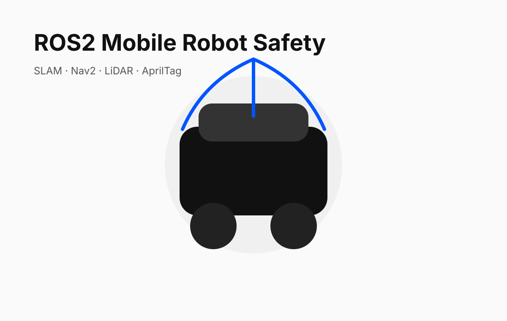

Autonomous Mobile Robots · ROS2
ROS2 Autonomous Mobile Robot Safety System
A TurtleBot3 system integrating driver monitoring, SLAM, teleoperation, AprilTag navigation, digital twins, and safety-aware control.

Problem
Mobile robot systems need more than navigation. They need sensing, safety logic, operator interfaces, simulation/digital twins, and fail-safe behavior when conditions change.
Role
Robotics project developer
Aug 2025 – Dec 2025
My Contribution
- Developed ROS2 nodes for navigation, safety, and operator monitoring.
- Integrated LiDAR-based obstacle avoidance and AprilTag tracking.
- Configured SLAM, teleoperation, and digital-twin demonstrations.
- Designed safety behavior for slow-down, stop, and pullover-style responses.
System Architecture
- Joystick and autonomous command inputs
- Driver/operator monitoring node
- LiDAR avoidance node
- AprilTag and SLAM localization workflows
- Safety supervisor node outputs final safe velocity command
Results
- Created a working ROS2 mobile robot stack.
- Demonstrated teleoperation, SLAM, visual tracking, digital twin behavior, and safety-aware control.
- Built a project aligned with real AMR deployment workflows.
Why it matters
This project connects core robotics engineering skills—sensing, modeling, control, simulation, and integration—with the type of systems thinking needed for autonomous and humanoid robots.